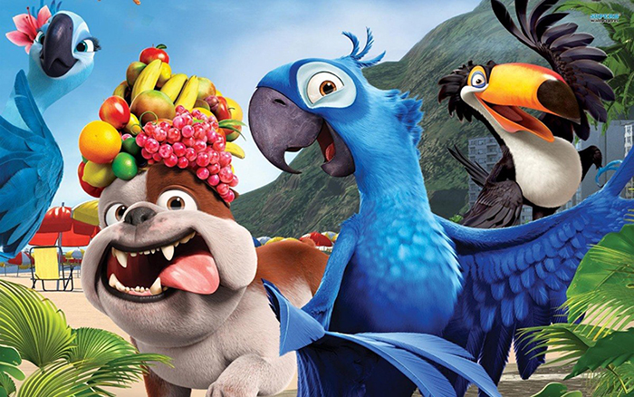

Rio

Capturada por contrabandistas de animais quando tinha acabado de nascer, a arara de nome Blu nunca aprendeu a voar e vive uma vida domesticada feliz em Minnesota, nos Estados Unidos, com sua dona, Linda. Blu pensa que é a última arara de sua espécie, porém quando descobrem que Jewel, uma fêmea, vive no Rio de Janeiro, Blu e Linda vão ao seu encontro. Os contrabandistas capturam Blu e Jewel, mas as aves escapam e começam uma aventura arriscada rumo à liberdade. Saiba mais sobre o filme...